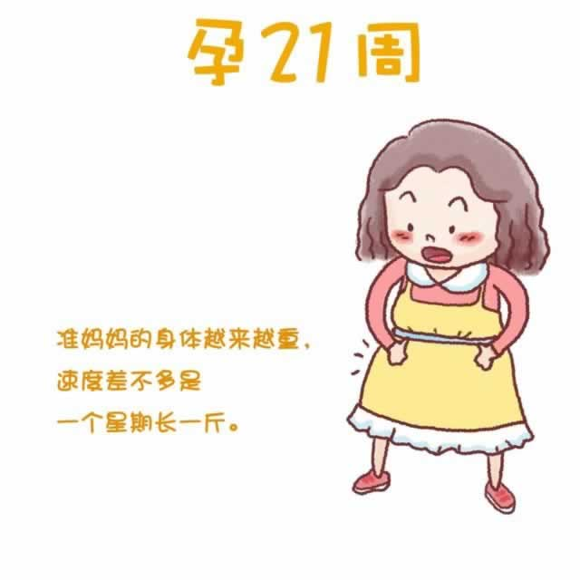

在本周以及随后的几周里，你的体重会以每周225克左右的速度稳步增加。每个人的显怀情况都不尽相同，如果产检医生告诉你胎儿一切正常，就不必介意此时自己的体重和孕周平均值相比是过大或者过小。
因为子宫日益增大压迫到肺部，所以你在上楼时会感到气喘吁吁。此时，放慢活动速度，穿着宽松的衣服和鞋子会让你舒服些。
随着肚子的增大，你的妊娠纹更加明显了。它可能不仅仅出现在腹部，还出现在大腿、臀部、甚至乳房上。你的肚脐可能不再是凹下去的，而是与腹部平齐，甚至是凸出的。不要担心，宝宝出生后，它会慢慢恢复到原位。
你可能会遇到的另一种皮肤变化是叫做蛛形血管瘤的东西。它是微红凸起，带有细小分支的小块，通常会出现在脸、脖子、胳膊等处，是因为孕期增高的雌激素引起的，通常在宝宝出生之后自然消失。